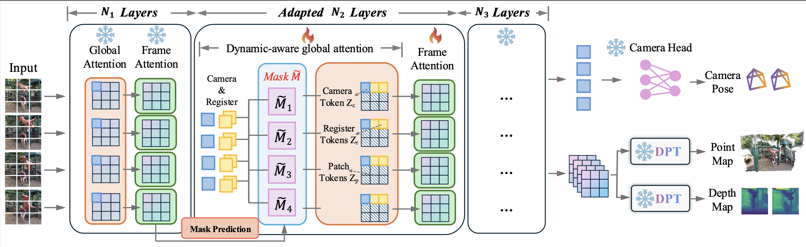

Recent 3D feed-forward models, such as the Visual Geometry Grounded Transformer (VGGT), have shown strong capability in inferring 3D attributes of static scenes. However, since they are typically trained on static datasets, these models often struggle in real-world scenarios involving complex dynamic elements, such as moving humans or deformable objects like umbrellas. To address this limitation, we introduce PAGE-4D, a feedforward model that extends VGGT to dynamic scenes, enabling camera pose estimation, depth prediction and point cloud reconstruction —all without post-processing. A central challenge in multi-task 4D reconstruction is the inherent conflict between tasks: accurate camera pose estimation requires suppressing dynamic regions, while geometry reconstruction requires modeling them. To resolve this tension, we propose a dynamics-aware aggregator that disentangles static and dynamic information by predicting a dynamics-aware mask—suppressing motion cues for pose estimation while amplifying them for geometry reconstruction. Extensive experiments show that PAGE-4D consistently outperforms the original VGGT in dynamic scenarios, achieving superior results in camera pose estimation, monocular and video depth estimation, and dense point map reconstruction. The link for both source code and pretrained model weights are provided in the supplementary material.
PAGE-4D is composed of four key components: (1) a pre-trained DINO-style encoder that extracts image-level representations; (2) a dynamics-aware aggregator that integrates spatial and temporal cues through three modules—Frame Attention for inter-frame patch relations, Global Attention for intra-frame patch relations, and Dynamics-Aware Global Attention for disentangling dynamic from static content; (3) lightweight decoders for depth, 3D point maps; and (4) a larger decoder dedicated to camera pose estimation. PAGE-4D inherits components (1), (3), and (4) directly from VGGT, while extending component (2) into a three-stage dynamics-aware aggregator as in Fig. 3. The first stage consists of 8 layers, each composed of one Global Attention and one Frame Attention block. Its output is fed into a dynamic mask prediction module, which produces a dynamics-aware mask. This mask is then applied in the second stage to disentangle dynamic and static content for pose and geometry estimation. The second stage itself consists of 10 layers, each comprising a Dynamics-Aware Global Attention block and a Frame Attention block. The final stage consists of 6 layers as the first stage.

Reconstruction of In-the-wild Videos with PAGE-4D.
PAGE-4D significantly outperforms all other methods across various tasks. Please refer to our paper for quantitative results. Here we also provide a qualitative comparison with VGGT(use the dropdown menu to switch).
Understanding dynamic scenes remains a central challenge in 4D computer vision, where object motion simultaneously provides valuable geometric cues and disrupts static-scene assumptions critical for camera pose estimation. In this work, we introduce PAGE-4D, a feedforward framework that adapts a pretrained 3D foundation model to dynamic environments through a disentanglement strategy. Our analysis shows that while VGGT excels in static scenarios, its unified treatment of motion leads to conflicts across tasks. To address this, we propose a dynamics-aware aggregator that disentangles static and dynamic content—suppressing dynamics for pose estimation while leveraging them for geometry and tracking. Combined with a targeted fine-tuning strategy on the most dynamic-sensitive layers, this design unlocks the backbone’s latent capacity for handling motion. Extensive experiments demonstrate that PAGE-4D achieves state-of-the-art results across depth, pose, and point cloud reconstruction benchmarks. Importantly, we show that effective disentanglement enables strong generalization even with limited dynamic data, paving the way for scalable and efficient 4D scene understanding.
All video materials used in this study were obtained from Pexels (https://www.pexels.com) and are distributed under the free Pexels License. While the license does not require individual attribution, we would like to acknowledge and thank the Pexels creators whose work contributed to the preparation of our figures and demonstrations.